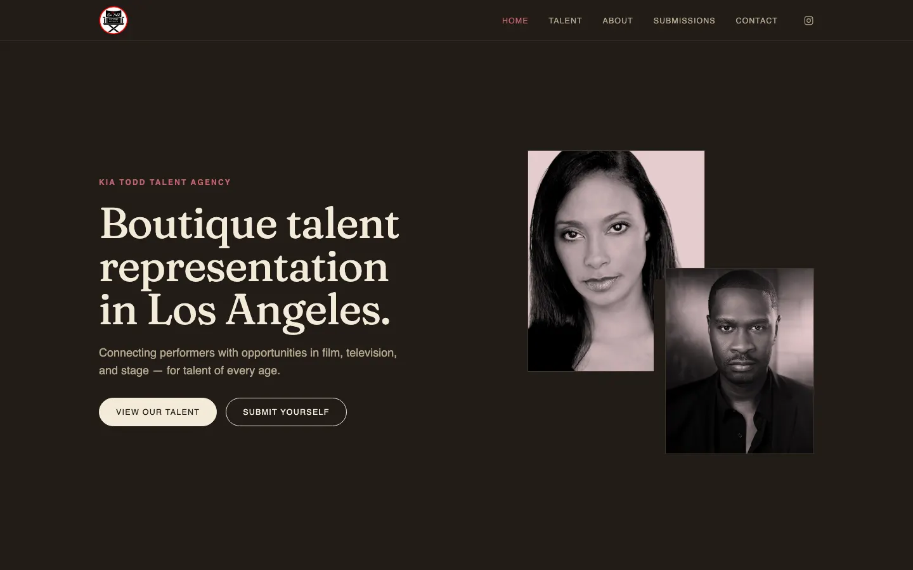
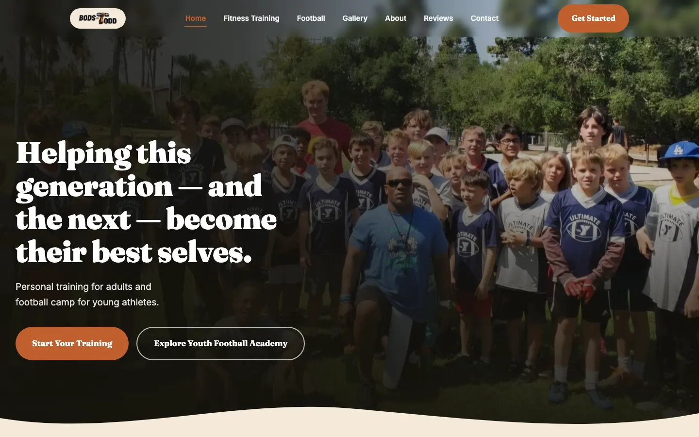

Get found and win customers
A professional website that turns visitors into inquiries and inquiries into customers.
- Websites and redesigns
- Local search and Google Business Profile
- Lead capture and landing pages
- Hosting and ongoing care
I'm Jose, a software engineer in Los Angeles. I build websites, automations, and custom tools that take everyday work off your plate.
Book a callWhat I do
Five ways I help businesses work smarter. Start with one, or let's look at the whole picture together.
A professional website that turns visitors into inquiries and inquiries into customers.
Automate the repetitive work so you can spend your time running the business.
Software that fits how you actually operate, instead of forcing you into someone else's process.
Practical AI that answers common questions, sorts inquiries, and handles routine paperwork, with you in control.
Sometimes you don't need anything new. You need someone to look at what you have and figure out what's broken. I connect the tools you already use and find the gaps.
Try it
Pick a common headache and see how technology could take it off your plate.
Inquiries sit in your inbox until you have time. Some get a reply days later; some never do.
Every inquiry gets an instant, friendly reply, lands in one list, and you get a nudge if nobody has called back.
The payoff: No lead slips through the cracks.
Illustrative examples. Every business is different, and we'd shape the solution around yours.
Recent work
A professional network needed more than a new look. It needed systems that made running the organization easier.

A talent roster that's easy for clients to browse and for the agency to manage.
Next up Self-service updates for the agency team
Visit the site
A coach with nearly 30 years of experience needed a site that shows it and makes it easy for families to sign up.
Free technology check-up
In a free 30-minute call, we'll look at your website, your day-to-day processes, and the tools you use. You'll walk away with three clear recommendations, whether or not we work together.
Book your check-upAbout me
I'm a software engineer in Los Angeles. I help business owners figure out where technology can save them time and bring in customers, then I build it.
My goal isn't to build you something and walk away. It's to understand how your business works and make it run better. You work with me directly, from the first call to long after launch.
More about meIf there's something you do every day that you wish you didn't have to do by hand, let's talk.
Book a free consultation